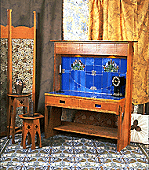

The New England Artisans Guild is a loosely banded group of craftsmen and women whose work revives the styles and philosophy of the Anglo-American Arts & Crafts Movement.
"ART IS THOUGHTFUL WORKMANSHIP"
W.R. Lethaby, 1915
"Another phase of the reaction from the modern type has been an
excessive regard for old things, so that original workers have not
had a fair chance of maintaining the full traditions of their
arts.... At the present moment people who would like to do things in
the best way would be well advised to have what they require made by
capable men in modern forms."
From "ART AND WORKMANSHIP" by W.R. Lethaby,
1915.
|
Members With Web Pages: John Burrows |
|
|
Kevin Rodel and Sue Mack |
|
|
Sarah Wildasin |
|
|
|
David Berman |
|
Carol Mead |
Charles Nazarian |